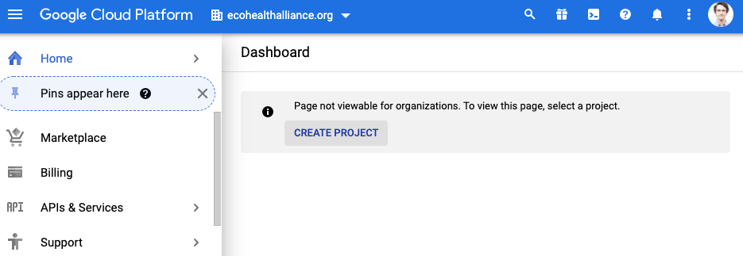
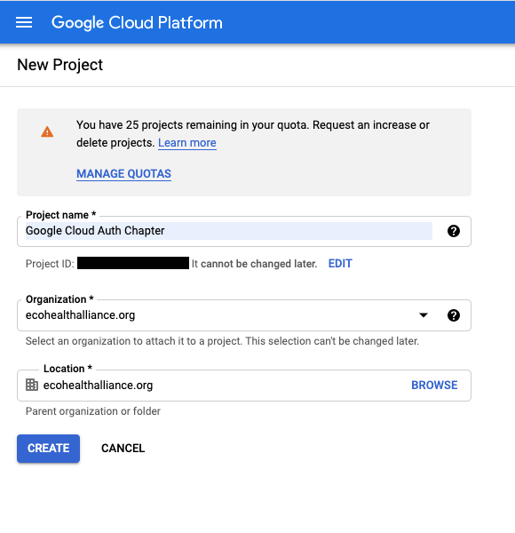
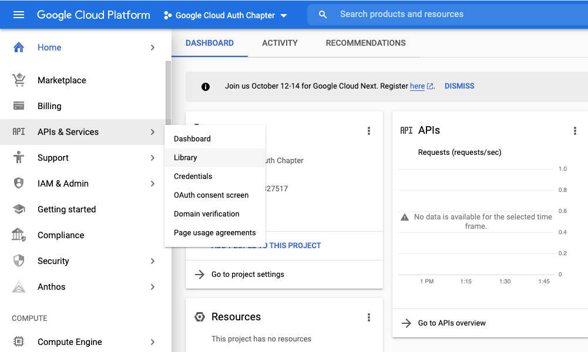
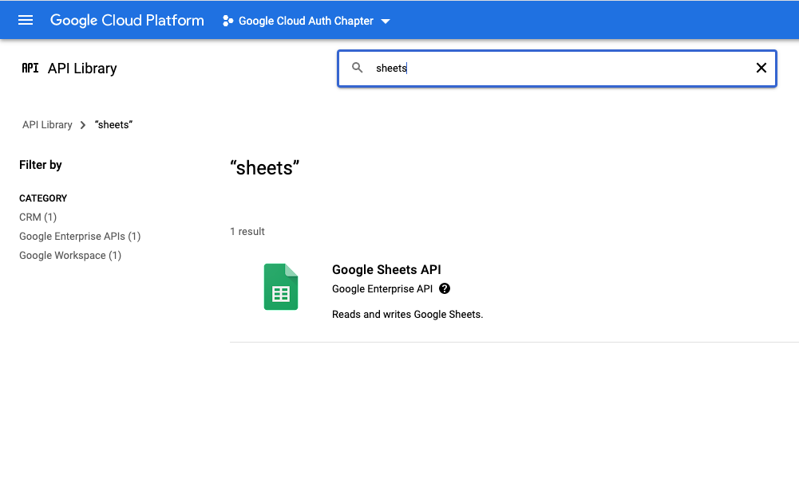
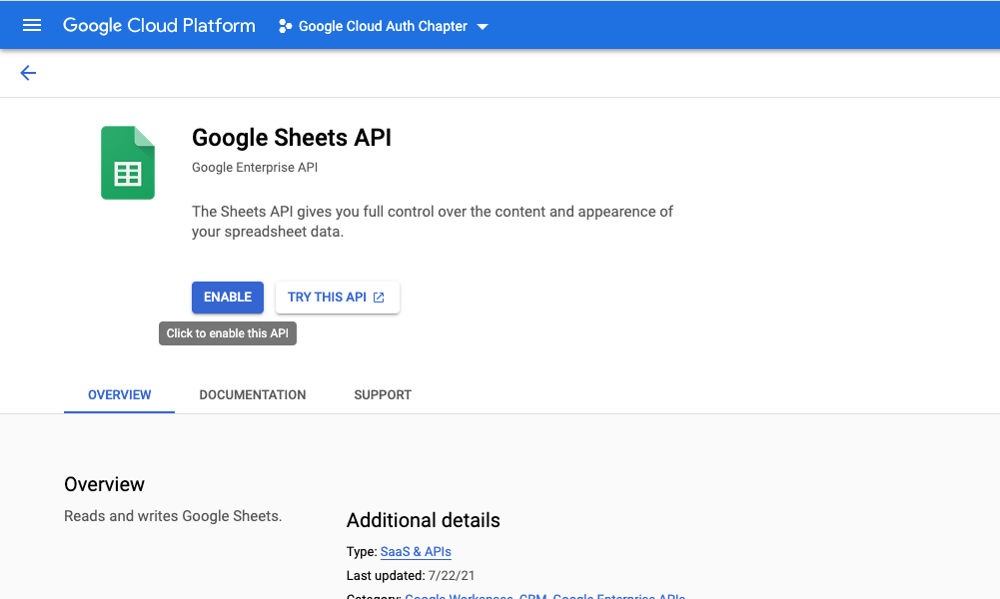
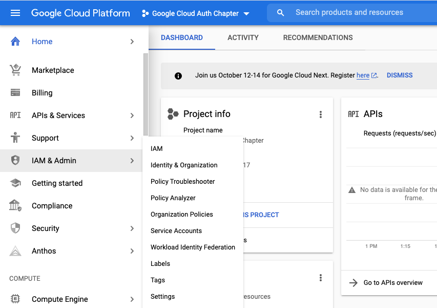
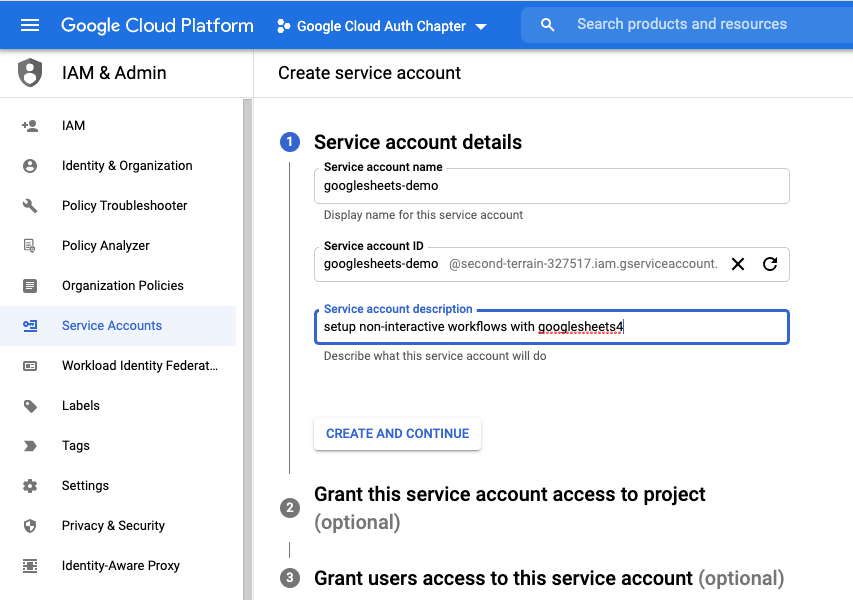
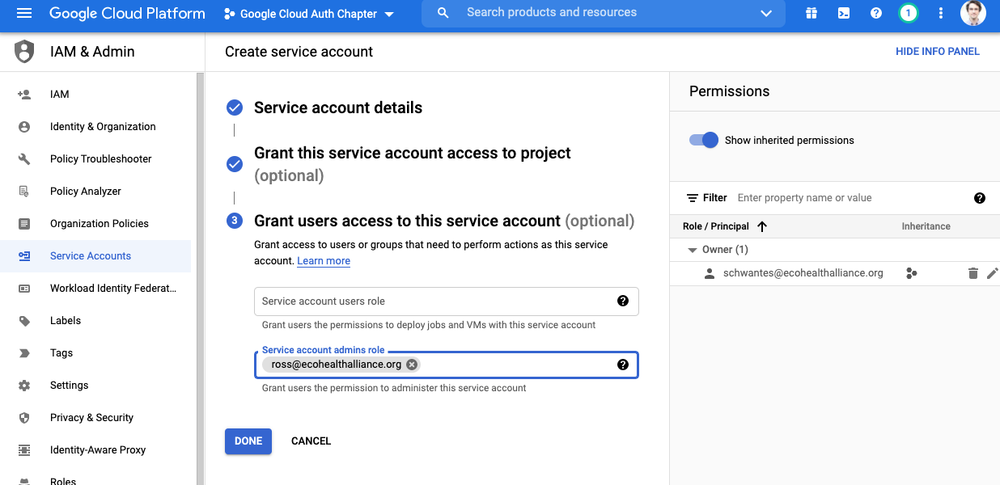
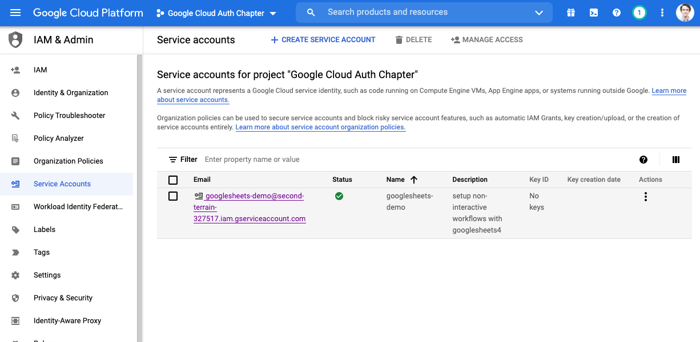
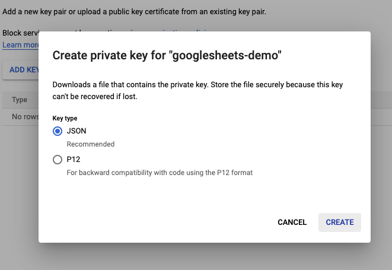

13 Google Authorization and R
EcoHealth Alliance sometimes uses Google Drive, and Google Sheets in particular, to store and collaborate on data. Working with Google Drive-based files in R is relatively painless thanks to the googledrive, googlesheets4, and gargle packages.
What is less straightforward is working with drive based files without having to manually authenticate your identity. In this chapter, we will walk through the process of creating credentials with API access that can be used in your R project or package. Ultimately, this could allow you to fully automate your Google-centric data pipelines.
13.1 The basic overview:
- Create or store something (sheet, csv, doc, etc.) in Google drive
- Create a Google Cloud project to manage Google services
- Enable the appropriate APIs for the project so it can access things like Drive and Sheets.
- Create a service account so that you can access the APIs via credentials from R
- Encrypt credentials then add them to your R project so that you can still use
git-based workflows without leaking access to your service account - Share Google-based resources with the service account and check that credentials work as expected from R
- Add an encryption key to RStudio Connect or Github as an environment variable so that R can access the resources in automated workflows
13.2 Key Terms
- Authentication - Confirms the identity of an entity
- Authorization - Permits an entity to do something
- Auth - shorthand for authentication or authorization
- Key or Token- Computer-generated credentials that allow for authorization and authentication. In the R-Google universe key and token are synonyms, though not all services use this way, at at times okens and keys are communicated over the web using different method. You will see these terms used interchangeably in tutorials.
- Symmetric encryption - A type of encryption that uses a singlekey to encrypt and decrypt an object
- Environment variable - A value stored in a computer’s system environment. In R, this generally means values stored in the
.Renvironfile, which can be brought into your project usingSys.getenv("Variable_Name")and are very useful for storing sensitive information like tokens and keys. - Service - Functionality provided by another system i.e. serving data via an API.
- GCP - Google cloud platform. Web services from Google.
13.3 Before we start:
Note: This is one workflow for encryption. An alternative approach useful for complex projects uses git-crypt instead. See chapter 14 for more on git-crypt.
Credit: This chapter largely follows the
non-interactive auth vignette from the Gargle R package, but diverges for package and non-package focused projects.
What about Billing?: Good question. This is not an issue for Google Sheets or Drive APIs but you do need a linked billing account for BigQuery and Maps APIs. If you’re new to GCP as of 29 Sept 2021 you get $300 of credits in the Free Tier. If you use the $300 in credits GCP will ask for consent before billing. Check with the Data Librarian about using and billing arrangements beyond this.
13.4 Setting up non-interactive authentication for Google sheets
In this chapter, we will walk through setting up credentials that can be used in R to access Google sheets without manual authentication. To achieve non-interactive authorization, we want to either provide a token directly to a service or make a token discoverable for a service. A token is essentially a long password, designed to be exchanged by machines but too long and complexly formatted to be used by people, and often time-limited. Remember that tokens, secrets, and API keys should be stored in a secure fashion (NOT stored in the text of your code or in unencrypted files).
We are going to follow the recommended (as of 29 September 2021) strategy of providing a service account key directly to handle authorization. A newer approach called “workload identity federation” exists as of writing but is not fully implemented in the gargle package.
13.4.1 Create a Google cloud platform project
“Google Cloud projects form the basis for creating, enabling, and using all Google Cloud services including managing APIs, enabling billing, adding and removing collaborators, and managing permissions for Google Cloud resources.” - GCP Docs
We will use a GCP project to access the Google sheets API via a service account. You do not need a profound understanding of GCP projects to setup a service account.
- Setup/view your Google cloud account
- Create a project on Google cloud to hold your credentials  
- The GCP console is your destination for monitoring and modifying your projects
13.4.2 Enable APIs
GCP Projects are centered on the idea that a single project will contain a single application. In our case, the application we are creating relies on the Google Sheets API. You can enable API’s for our application to access via the APIs & Services menu item.
- In the left side menu, navigate to APIs & Services > Library 
- Choose your api of interest. For this example it is Google sheets. 
- Enable the api of interest. If you need to enable more API’s later you can always come back.
13.4.3 Create a Service Account
Service accounts allow applications, like the GCP project we make, to access certain resources they need via authorized API calls. The service account’s access can be limited such that it can only access specific resources in a certain way.
Importantly, service accounts are not part of the EHA workspace domain. You have to manually share resources like Google sheets with a service account even if you have provided domain-level access.
- Navigate back to your project homepage
- In the left sidebar go to IAM & Admin > Service Accounts 
- Click create service account
- Give it a good name and description 
- For Google sheets, we do not need to assign our account service a role
- Roles can be established to perform tests and otherwise manage the service but are not necessary
- Also not necessary to grant user access for this example
- You may have a need for this with more complicated services
- It may also be a good idea to get some redundancy in your workflow 
13.4.4 Create a Key for your service account
Keys for Google service accounts are stored in JSON files. Remember that this key will hold very sensitive information and we should treat it like a username and password combo.
Click on the appropriate item in the service accounts table. Notice that it says no key.
Click on the keys tab, then click on ADD KEY

Select create new key and download the JSON file. WARNING: Do not store this unencrypted key in a shared location (Dropbox, Google Drive, folder connected to a git repository). 
You should now see that there is an active key associated with your service account in the GCP project.
13.5 General approach to securely managing keys
This workflow uses the relatively simple approach of symmetric encryption to securely store files on shared resources like a github repository. Symmetric encryption uses a single key to encrypt and decrypt files. In this workflow, the key is generated from a passphrase.
- Unencrypted files storing keys for the Google service account should NOT be stored in shared or public locations (Drive, Dropbox, Github Repo)
- If possible store in an encrypted volume. Keybase, Bitwarden, and other credential management storage systems generally allow you to store files in an encrypted manner.
- Files storing keys for the Google service account only ever enter the project working directory after being encrypted
- Encryption keys or the passwords used to generate keys are stored as environment variables and retrieved from
.Renviron, never hard-coded into scripts.
Skip ahead to Securely managing your keys for packages if you are using the key in a project that produces a package.
13.5.1 Provide a service account key for projects
Now you have a secret key for the service account and need to securely access it in an R project. We can use the sodium and gargle packages to encrypt the JSON file that stores our key, safely store the encrypted file in the R project, and securely store the encryption key as an environment variable. If additional files or data require encryption it is recommended that use the git-crypt approached described in chapter 14.
This section was inspired by the workflow described in ROpenSci:Security with additional information from the sodium vignette and gargle vignette.
13.5.1.1 Create and store encryption password
Here we will create an environment variable to store our encryption password.
- We will store it in the user-level
.Renvironfile that is outside of your project repository so it is not accidentally committed to your project.
Creating your password encrypting the key should only need to be done once, then we will write code that makes use of your encrypted key every time it runs.
library(sodium)
library(gargle)
library(usethis)
library(readr)
## Name of Environment variable
pw_name <- gargle:::secret_pw_name("service_account")
#> SERVICE_ACCOUNT_PASSWORD
## Value of Environment variable
pw <- gargle:::secret_pw_gen()
#> someSecretComplicatedPassword
sprintf("%s=%s",pw_name, pw)
#> SERVICE_ACCOUNT_PASSWORD=someSecretComplicatedPassword
usethis::edit_r_environ(scope = "user")
#### Copy and paste pw_name=pw into .Renviron file ###
# 1 SERVICE_ACCOUNT_PASSWORD=someSecretComplicatedPassword
# 2
# always leave an empty line at the end of the .Renviron file13.5.1.2 Create encryption key
make_sodium_key <- function(env_var_name = "SERVICE_ACCOUNT_PASSWORD"){
pw <- Sys.getenv(env_name)
# we use scrypt as our hashing function because it makes keys difficult
# to brute force.
k <- sodium::scrypt(charToRaw(pw))
return(k)
}
key <- make_sodium_key()
# The key we just made is binary so it has to be converted to character in order
# to be stored in .Renviron
sodium::bin2hex(key)
usethis::edit_r_environ(scope = "user")
########### .Renviron file ####################
# 1 SERVICE_ACCOUNT_PASSWORD=someSecretComplicatedPassword
# 2 SERVICE_ACCOUNT_NA_KEY=output_from_bin2hex_function
# 3
# always leave an empty line at the end of the .Renviron file13.5.1.3 Symmetrically encrypt your file
Now that we have a sodium key stored as an environment variable, we can symmetrically encrypt our JSON file that stores the service account key. The encrypted file will live in inst/tokens within your working directory. After the file has been encrypted it is safe to push it to a remote git repository.
# get your sodium key from the environment variable
get_sodium_key <- function(env_var_name = "SERVICE_ACCOUNT_NA_KEY"){
k <- sodium::hex2bin(Sys.getenv(env_var_name))
return(k)
}
key <- get_sodium_key()
# Our encrypted file will live here
dir.create("./inst/tokens",recursive = T)
binJSON <- readr::read_file_raw("My/directory/outside/the/project/service_account_key.json")
cipher <- data_encrypt(msg = binJSON, key = key2,nonce = random(24))
# The encrypted file in inst/tokens is now safe to push to a remote repository
saveRDS(cipher, "./inst/tokens/service_account_key.rds")13.5.1.4 Run your code using encrypted keys
In the code that reads in data from Google, decrypt the credentials then pass them to Google using the gs4_auth function:
13.5.1.5 Read in your sheet
- Make sure your sheet is shared with the service account if it hasn’t been already
13.5.1.6 Add Environment Variable to other services
Non-interactive authentication allows us to automate workflows that involve Google sheets on services like Rstudio connect or Github Actions. In either case, it is relatively straight forward to securely add our SERVICE_ACCOUNT_PASSWORD environment variables to those services.
See documentation here:
13.5.2 Securely managing your keys for Packages
You can make your secret service account ky accessible to your R package. We will use the sodium package as well as functions in gargle to encrypt the JSON file that stores the key and securely store the encryption key as an environment variable. Notice that we are using the ::: operator in function calls. See this article for more details.
13.5.2.1 Create and store encryption password
Here we will create an environment variable to store our encryption password.
- We will store it in the user-level
.Renvironfile that is outside of your project repository so it is not accidentally committed to your project.
Creating your password encrypting the key should only need to be done once. The package can then use code that makes use of your encrypted key every time it runs.
library(sodium)
library(gargle)
library(usethis)
## Name of Environment variable
pw_name <- gargle:::secret_pw_name("gargle")
#> GARGLE_PASSWORD
## Value of Environment variable
pw <- gargle:::secret_pw_gen()
#> someSecretComplicatedPassword
sprintf("%s=%s",pw_name, pw)
#> GARGLE_PASSWORD=someSecretComplicatedPassword
usethis::edit_r_environ(scope = "user")
#### in .Renviron file ###
# 1 GARGLE_PASSWORD=someSecretComplicatedPassword
# 2
# always leave an empty line at the end of the .Renviron file13.5.2.2 Encrypt the Secret File
13.5.2.3 Test that you can decrypt
13.5.2.4 Give the env variable to services (Optional)
If the package will be used in services like RStudio Connect or Github Actions, it is relatively straight forward to securely add our GARGLE_PASSWORD environment variables to those services.
See documentation here:
13.6 Additional Resources
13.6.1 Google Drive
The googledrive package allows you to interact with files stored in Google drive from R. You can download, share, delete, copy, publish and otherwise manipulate files on your drive using this package.
Package vignettes can be found here
13.6.2 Google Sheets
The googlesheets4 package allows you to directly interact with Google sheets in R. You can read, write, reformat, create formulas, and otherwise manipulate the sheet of interest.
Package vignettes can be found here